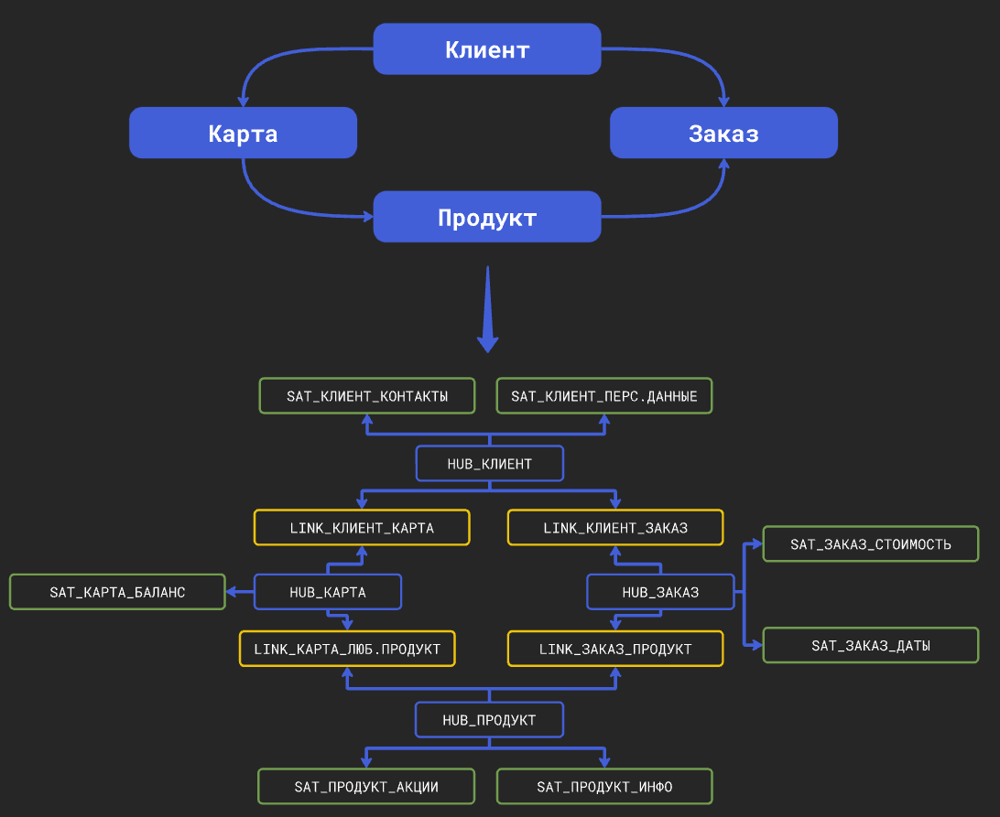

Сущности
Что такое сущность?
Сущность - логическое понятие для работы через Datapulse. Сущность представляет собой объект реального мира (товар, клиент, заказ, транзакция), а "под капотом" у нее - hub и satellite.

Это значительно упрощает разработку DataVault, так как пользователю не требуется спускаться на уровень хабов и сателлитов, а нужно работать на уровне абстракции. Datapulse на своей стороне генерирует необходимые таблицы.
Создание сущности
1️⃣ Указание атрибутов
Общие параметры
Сперва укажите следующие общие параметры сущности:
- наименование
- описание (опционально)
- группу
- теги
При указании группы и тегов, каждой таблицы сущности (hub, satellite), которая представляет собой модель dbt, будут присвоены указанные группа и теги.
Шаблоны имен
На основе наименования сущности будут формироваться имена таблиц hub и satellite.
hub - hub_ИмяСущности
satellite - sat_ИмяСущности_ИмяСателлита
Проверка имени
Datapulse автоматически проверяет занято ли наименование сущности. Но он не проверяет существуют ли hub и satellite с таким же наименованием. Поэтому если вы вручную создавали таблицы в DWH с такими наименованиями, они будут перезаписаны!
Атрибуты
Далее на вкладке Атрибуты укажите бизнес-атрибуты сущности. Указывайте только бизнес-атрибуты, которые описывают сущность! Технические атрибуты, такие как EFFECTIVE_FROM_DTTM (дата начала действия записи) или SOURCE_ID (код источника) будут сформированыв автоматически.
Про технические атрибуты более подробно смотрите здесь.

Опционально можете указать описания атрибутов для Data catalog.
Также укажите, какой атрибут (1 или несколько) будет являться натуральным ключом сущности. На основе этого ключа будет формироваться суррогатный ключ - hash.
После для каждого атрибута (кроме тех, которые входят в натуральный ключ!) укажите сателлиты.
Как выбрать натуральный ключ?
Натуральный ключ сущности - свойство, которое однозначно идентифицирует экземпляр сущности.
Пример:
- клиент - номер паспорта
- товар - SKU
- заявка - номер заявки.
Конечно не всегда есть подобные данные. В таком случае, можно использовать ID системы источника - уникальный идентификатор, взятый из источника.
Пример:
- клиент - ID клиента из CRM
Но в таком случае важно обязательно добавить в натуральный ключ код источника. Ведь, если у вас несколько источников, из которых вы берете клиентов (CRM + ERP), в разных системах у разных клиентов могут быть одни и те же значения ID!
| ID | ФИО | СИСТЕМА |
|---|---|---|
| 1 | Иванов Иван Иванович | 1C |
| 1 | Петров Петр Петрович | CRM |
Добавить константу кода источника потребуется в таблицу до создания сущности, чтобы потом выбрать добавленный столбец, как натуральный ключ.
Тип данных натуральног ключа
По умолчанию Datapulse сам определяет типы данных у атрибутов, если их не указать явно.
Но в случаях, когда несколько источников грузятся в одну сущность, рекомендуется явно указывать тип данных у натурального ключа. Ведь в данный столбец будут загружаться значения из двух разных источников, которые могут быть с разными типами данных, что приведет к ошибке.
Как выбрать сателлит?
Сателлит - группа атрибутов сущности. Разбивать атрибуты можно по следующим критериям:
- по смыслу (основная информация, контактные данные, маркетинговая информация - как на скрине выше)
- по частоте обновления (редко изменяемые атрибуты: номер паспорта, ФИО, дата рожения; часто изменяемые атрибуты: статус заявки, сегмент клиента)
2️⃣ Маппинг атрибутов
Далее выберите от 1 до N источников (моделей dbt), данные которых будут заполнять вашу сущность. А после сопоставьте указанные ранее атрибуты сущности со столбцами выбранных источников.

По методологии DataVault в один сателлит вы можете грузить только один источник. Если вам требуется загружать несколько источников в один сателлит, потому что у вас несколько дублирующих логику источников, потребуется перед созданием сущности объединить две таблицы с помощью UNION ALL.
3️⃣ Настройки источника
На вкладке Дополнительно для каждого источника укажите следующие параметры:
effective_from_dttm- источник значений для даты и времени начала действия записи (scd-2 версионность). Если ничего не указано, при вставке новой строки будет записыватьсяcurrent_timestamp.source_id- код источника (любое текстовое значение, определяющее из какого источника получены данные).load_dttm- источник значений для столбца дата и время загрузки в таблицу. Если ничего не выбрано, будет записыватьсяcurrent_timestamp.
load_dttm также выступает столбцом инкрементом для инкрементальной загрузки в таблицу DataVault.
Поэтому если ничего не выбрано, каждый раз при обновлении таблицы DataVault будет полностью сканироваться весь источник, что может сказаться на времени обновления.

4️⃣ Настройка целевых таблиц
На той же вкладке Дополнительно вы можете настроить таблицы (хабы и сателлиты), которые будут созданы непосредственно в DWH. Настройки таблиц детально описаны здесь и здесь.
Технические столбцы
Datapulse автоматически формирует следующие технические столбцы в целевых таблицах: хабах и сателлитах.
HUB
ИмяСущности_hk- суррогатный ключ (hash на основе натурального ключа)source_id- код источника (константа, указанная пользователем)load_dttm- дата и время записи в таблицу
SATELLITE
ИмяСущности_hk- суррогатный ключ (hash на основе натурального ключа)sat_ИмяСущности_ИмяСателлита_hashdiff- hash на основе значений атрибутов сателлита (предназначается для определения изменений и записи новых версий)effective_from_dttm- дата и время начала действия записиsource_id- код источника (константа, указанная пользователем)load_dttm- дата и время записи в таблицу
Модели dbt
Во время создания сущности Datapulse автоматически генерирует модели dbt для хабов и сателлитов.
Все модели с типом incremental и incremental strategy - append (только вставка новых данных).
Дополнительно Datapulse генерирует dbt модели для staging area таблиц. О них и их предназначении более подробно здесь.
Дата окончания действия записи
По методологии DataVault в сателлитах нельзя хранить effective_to_dttm (дату и время окончания действия записи). Так как предполагается только вставка данных в таблицы (append), а наличие столбца effective_to_dttm предполагает операции UPDATE.
Чтобы пользователи каждый раз не писали оконные функции при обращении к сателлитам, Datapulse автоматически создает view над каждым сателлитом, которое является копией сателлита с добавлением столбца effective_to_dttm.
Наименование view - sat_ИмяСущности_ИмяСателлита_v